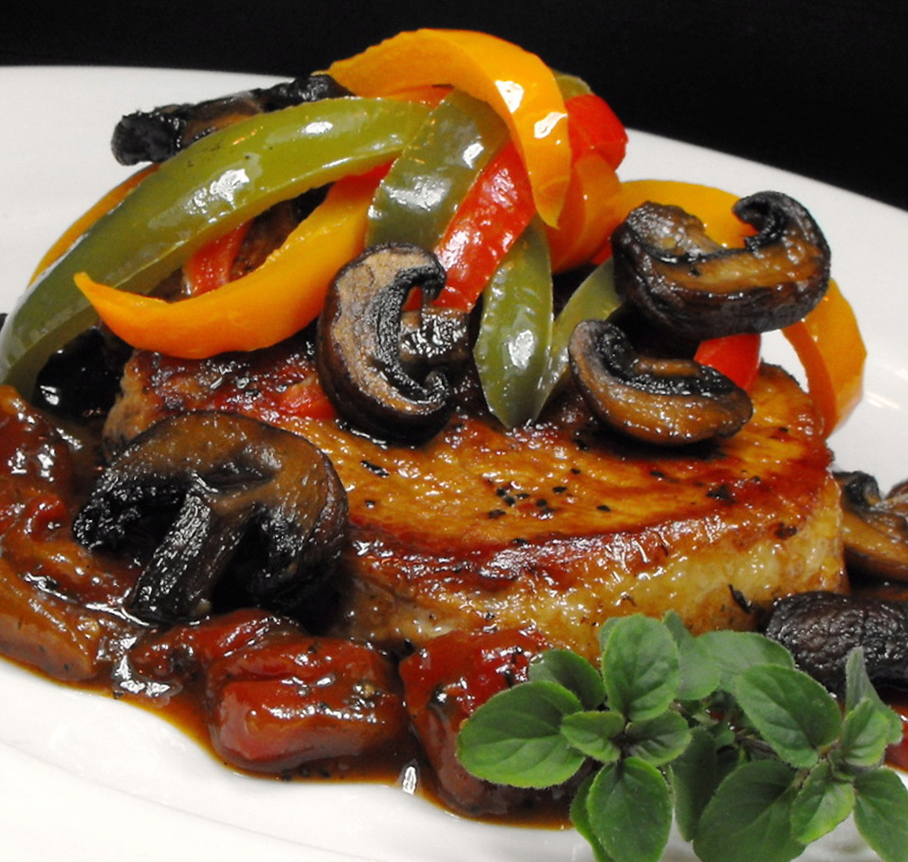

Pork Chops Italiano

Description
Flavorful, tender pork chops with Italian pizzazz. Great served over
noodles.
Ingredients
- 1 teaspoon olive oil
- 2 cups sliced mushrooms
- 2 tablespoons olive oil
- 6 (3/4 inch thick) pork loin chops
- 2 cloves garlic, crushed
- 1 cup chopped onion
- 1 (14.5 ounce) can diced Italian tomatoes, undrained
- 1 teaspoon dried basil
- ½ teaspoon dried oregano
- ½ teaspoon salt
- ¼ teaspoon ground black pepper
- ½ cup water, if necessary
- 1 large green bell pepper, cut in 6 pieces
Steps
-
Heat 1 teaspoon olive oil in a skillet over medium heat. Stir in
mushrooms; cook and stir until mushrooms are tender, 5 to 7 minutes.
Transfer the mushrooms to a bowl and set aside.
-
Heat the remaining 2 tablespoons olive oil in the skillet over medium
heat. Add the pork chops, browning on both sides, 7 to 10 minutes. Place
the pork chops on a plate, then drain all but 1 tablespoon of drippings
from the skillet. Stir in the garlic and onion; cook and stir until the
onion has softened and turned translucent, about 5 minutes.
-
Pour in the tomatoes, then season with basil, oregano, salt, and pepper.
Transfer the pork chops back to the skillet; cover and simmer until the
pork chops are tender and no longer pink in the center, about 45
minutes. Stir in some water if the mixture becomes too dry. Place the
bell pepper on top of the pork, then add the reserved mushrooms.
Continue to simmer until the bell pepper is tender, 5 to 10 minutes.
Back to Home